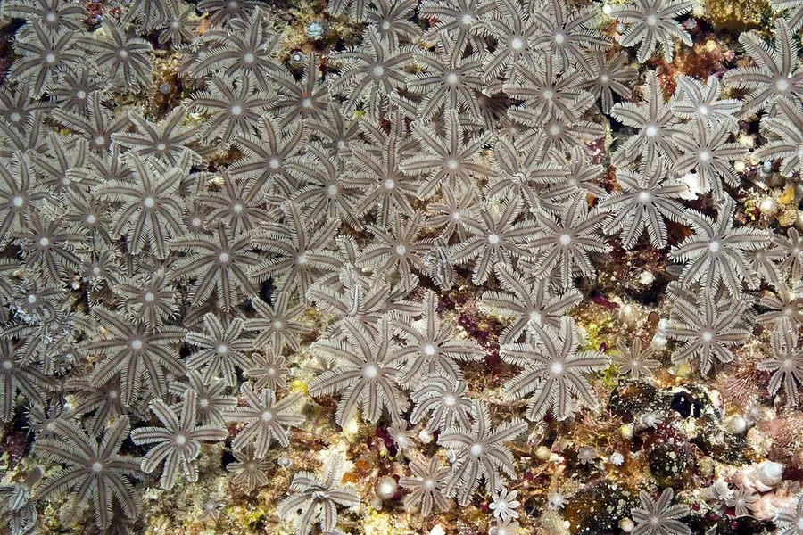

其他无脊椎动物 · 动物界
笙珊瑚 Tubipora musica

印度洋—太平洋珊瑚礁的八放珊瑚，骨骼由红色管状结构并列而成，形似笙管，珊瑚虫伸出绿色的羽状触手。
- 分类
- 门刺胞动物门纲珊瑚纲目笙珊瑚目科笙珊瑚科属笙珊瑚属
- 栖息环境
- 热带珊瑚礁的礁坪和潟湖，水深 0–20 米
- 地理分布
- 印度洋—太平洋热带海域，从红海到太平洋岛屿
- 保护级别
- IUCN 近危（NT）；CITES 附录Ⅱ
物种志
笙珊瑚的骨骼由一根根红色的细管并列组成，管子之间由横向的连接板固定，整体像一排排笙管，因此得名。活体群体中，珊瑚虫从红色管口伸出，触手呈绿色或灰白色，羽状排列，与红色骨骼形成鲜明对比。
它分布于印度洋—太平洋的浅海珊瑚礁，常见于礁坪和潟湖，水深 0–20 米，与虫黄藻共生，白天伸展触手进行光合作用，夜间捕食浮游生物。笙珊瑚是八放珊瑚，每个珊瑚虫有八条羽状触手，骨骼由红色钙质骨针融合而成。它因颜色鲜艳常被采作观赏和工艺品原料，过度采集会破坏礁体；石珊瑚整体列入 CITES 附录Ⅱ，但其采集监管仍需加强。
形态与习性
- 形态红色管状骨骼并列，形似笙管
- 触手八条羽状触手，呈绿色或灰白色
- 共生与虫黄藻共生
- 水深常见于 0–20 m 的礁坪和潟湖
- 用途常被采作观赏和工艺品原料
- 保护CITES 附录Ⅱ
趣味知识
- 笙珊瑚的红色骨骼由细管并列而成，看起来像一件乐器。
- 它属于八放珊瑚，每个珊瑚虫都长着八条羽状触手。
- 笙珊瑚的骨骼常被做成工艺品，过度采集会损伤礁体。